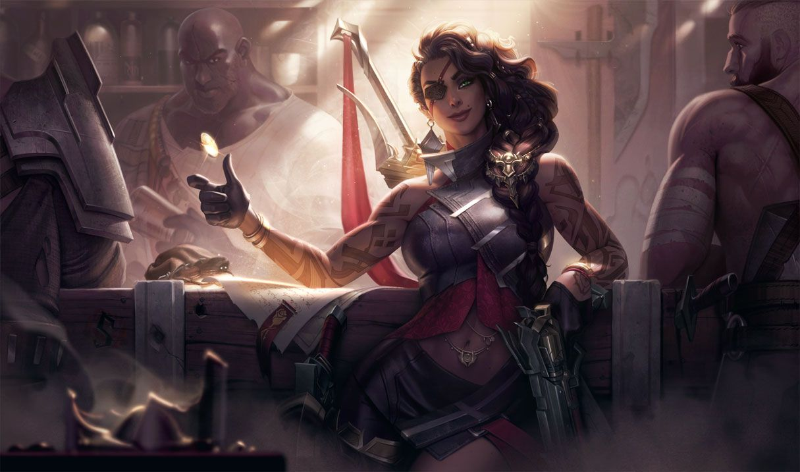

사미라
사미라
사미라, 사막의 장미
Samira, the Desert Rose

1. 배경
2. 스킬
2.1. 패시브 - 무모한 충동(Daredevil Impulse)
사미라가 근접 공격 사거리 내에 있는 적에게 스킬을 사용하거나 기본 공격을 가하면 추가 마법 피해를 입힙니다. 피해량은 대상이 잃은 체력에 비례하여 2배까지 증가합니다.
사미라가 이동 불가 효과에 영향을 받은 적에게 기본 공격을 가하면 최대 사거리까지 돌진합니다. 해당 적이 공중으로 띄워진 상태라면 사미라도 최소 0.5초간 롤아이콘-군중제어 에어본공중으로 띄워 올립니다.
사미라의 돌진 사거리는 레벨에 따라 증가합니다.
2.2. Q - 천부적 재능(Flair)
근접 공격 사거리 내에 있는 적에게 이 스킬을 사용하면, 사미라가 검으로 베어 물리 피해를 입힙니다.
2.3. W - 원형 검무(Blade Whirl)
2.4. E - 거침없는 질주(Wild Rush)
사미라가 피해를 입힌 적 챔피언이 3초 안에 처치되면 거침없는 질주의 재사용 대기시간이 초기화됩니다.
2.4. R - 지옥불 난사(Inferno Trigger)
사미라가 무기를 난사해 2초 동안 10회에 걸쳐 주변의 모든 적에게 롤아이콘-정신집중공격을 퍼붓습니다. 각 사격은 물리 피해를 입히며 66.6%의 생명력 흡수가 적용됩니다. 또한 치명타가 적용될 수 있습니다.
3. 장점
추격에 특화된 스킬셋과 높은 킬 캐치 능력
사거리는 원딜 평균보다 짧지만 이동기와 이동 속도 증가의 조화로 인해 기동력이 우수하고 순간적인 폭딜도 뛰어나 킬 캐치력도 높다. 돌진기가 킬 관여 시에 쿨타임이 초기화되어서 원거리 딜러 중에는 최상급의 이동 능력을 가졌다고 할 수 있다. 아군이 에어본을 걸어주면 패시브로도 날아간다. 또한 전반적인 스킬 쿨타임이 짧으며[48] 궁극기의 쿨까지 매우 짧기 때문에 스킬 쿨에 발목을 잡히는 경우가 거의 없다. 이런 여러 이유로 사미라는 한 번의 전투에서 많은 전리품을 얻을 수 있다. 비교적 최신 챔피언임에도 불구하고 라이엇 내부 통계에 따르면 기존에 이 쪽 전문이었던 카타리나와 마스터 이 등을 모두 제치고 랭크 게임 펜타 킬 빈도 1위를 찍었을 정도로 사미라의 판 휩쓸기 능력은 매우 뛰어나다.풍부한 교전 변수
뛰어난 성장 화력
사미라는 기본 피해량이 낮은 대신 스킬들의 계수가 매우 높은 데다가 주력기인 Q와 R이 치명타의 영향을 받기 때문에 성장력이 매우 뛰어나다. 근접해서 적을 때리면 추가 피해를 주는 어드밴티지도 있고 궁극기는 폭발적인 딜량을 광역으로, 패시브 랭크만 잘 쌓으면 여러 번 사용할 수도 있으니 사미라의 후반 안정성에 의문 부호가 붙을 수는 있어도 성장만 이루어진다면 엄청난 폭발력을 보여줄 수 있는 셈이다. 그래서 모든 템을 갖추고 탱템을 아무리 뽑아도 사미라의 딜을 버티지 못하게 되는 40분 이후가 되면 적이 5명이 모두 있어도 사미라의 궁극기가 제대로 들어갔다는 가정하에 일단 딜러진은 사망 확정에 탱커진도 무시하기 힘든 딜량이 나온다. 게다가 생명력 흡수까지 적용되어 후반 한타에서도 적이 사미라를 대처하기 힘들어 궁극기를 사용할 여건만 된다면 전성기가 끊기지 않는다. 심지어 패시브 중첩만 잘 쌓으면 이를 두 번 이상 사용하는 것도 가능하다. 살인적인 궁극기의 딜량을 광역으로 두 번이나 뽑아내는 데 성공한다면 그 한타는 질래야 질 수가 없다.우수한 생존력
원딜 중 비교적 낮은 조작 난이도
4. 단점
높은 궁극기 의존도와 그로 인한 하이리스크
앞에서 궁극기 의존도를 낮추는 방향으로 패치를 지속적으로 받아 왔다고 서술하였지만, 그럼에도 여전히 사미라의 핵심 중 핵심은 궁극기를 사용하여 전황을 뒤집는 데에 있다. 그만큼 궁극기의 밸류가 높아서이기도 하지만 그보다 근본적인 이유는 궁극기를 사용할 수 없는 상태의 사미라는 사거리는 짧아 딜각을 잡기 어려운데, 프리딜의 리턴값도 그다지 크지 않은 원딜이기 때문이다.[50] 이런 궁극기 의존도 때문에 사미라는 빠르게 스타일 콤보를 쌓아 궁극기를 얼마나 적재적소에 활용하느냐가 가장 중요해지며, 직접 적진에 파고들어 딜을 하는 사미라의 특성상 어쩔 수 없이 상대에게 CC기를 얻어맞기 좋은 상황이 만들어지게 되는데, 궁극기의 비중이 높은 챔피언의 궁극기가 끊기기도 쉽다 보니 들어가서 스타일을 쌓고 궁극기를 켜자마자 CC기를 얻어맞고 캔슬되는 일이 일어날 수도 있다. 그나마 쿨타임은 짧은 편이지만 스타일을 처음부터 다시 쌓아야 하고, 아무리 어느 정도는 버틸 수 있는 템세팅을 하더라도 궁극기가 캔슬된 상황에서 스타일을 다시 쌓고 궁극기 쿨이 돌 때까지 버틸 수는 없다. 이렇듯 짧은 사거리로 적진 한복판에서 광역딜을 넣어야 하므로 일반적인 원딜에 비해 리스크가 크다. 비슷한 예시로 블라디미르가 있다. 무시무시한 광역딜 능력을 가졌고, 둘 다 중후반 캐리력을 보고 사용하는 픽이며, 게임의 시작부터 끝까지 몸을 던지는 플레이 방식을 가졌다는 점까지 같다.
이로 인해 사미라는 퍼펙트 경기가 가장 어려운 원거리 딜러로 자주 언급된다. 아무리 잘 컸어도 딜을 위해서는 전장에 직접 들어가야 하기에 판단 미스나 상대방의 뛰어난 포커싱으로 한순간에 폭사해버릴 수 있고, 이로 인해 제압 골드를 크게 내주면서 게임이 기울어지는 일이 자주 발생한다. 성장이 잘 되면 파괴력은 엄청나지만, 한순간의 실수로 역스노우볼링도 쉽게 일어나는 하이리스크 챔피언.높은 아군 의존도
매우 경직된 빌드
도주기의 부재
상기한 이유들로 인한 매우 낮은 저점
원거리 딜러를 주로 플레이하는 유튜버, 스트리머들도 사미라가 망하면 그 어떠한 원딜보다도 쓰레기라고 할 정도이고, '사미라로 망하면 어떻게 해야하나요' 라는 질문에는 '망하면 안 된다, 망하면 게임 져야 한다' 라고 말할 정도로 사미라의 저점은 다른 저점이 낮은 원딜들보다도 훨씬 심각한 수준이다. 정작 라인전은 오히려 약한 편에 가깝다는 점에서 저점이 터질 위험성이 상당히 높은 편이기까지 하다.

저작물은 CC BY-NC-SA 2.0 KR에 따라 이용할 수 있습니다. (단, 라이선스가 명시된 일부 문서 및 삽화 제외)